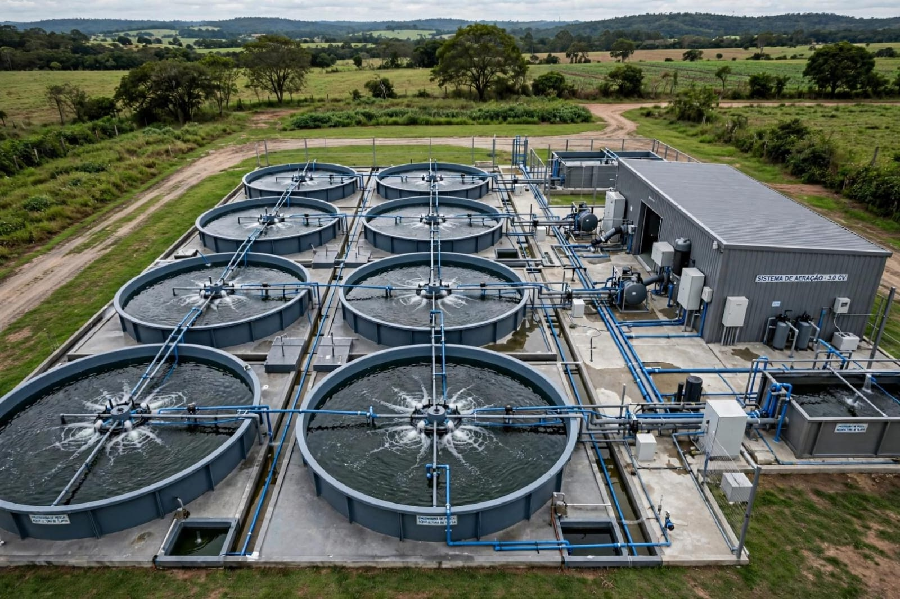
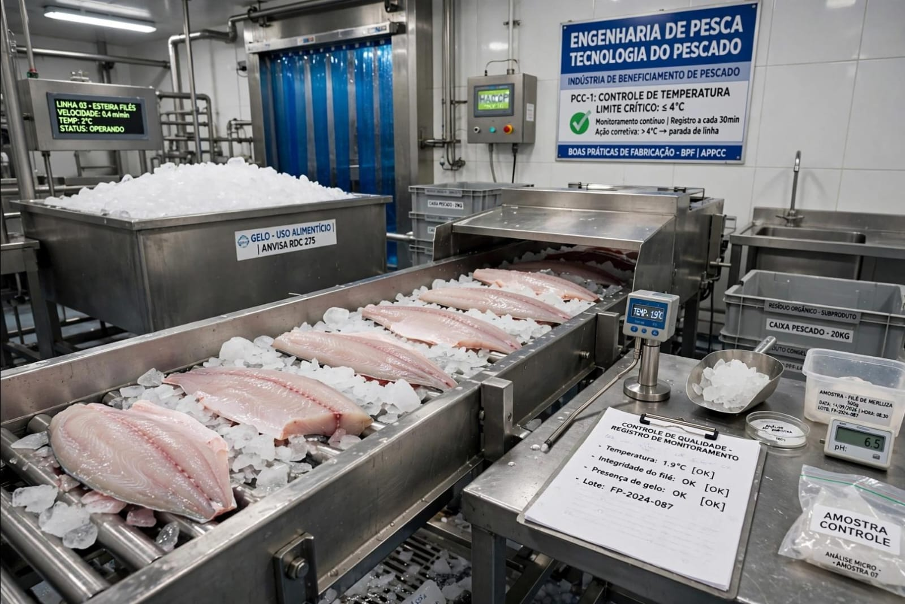
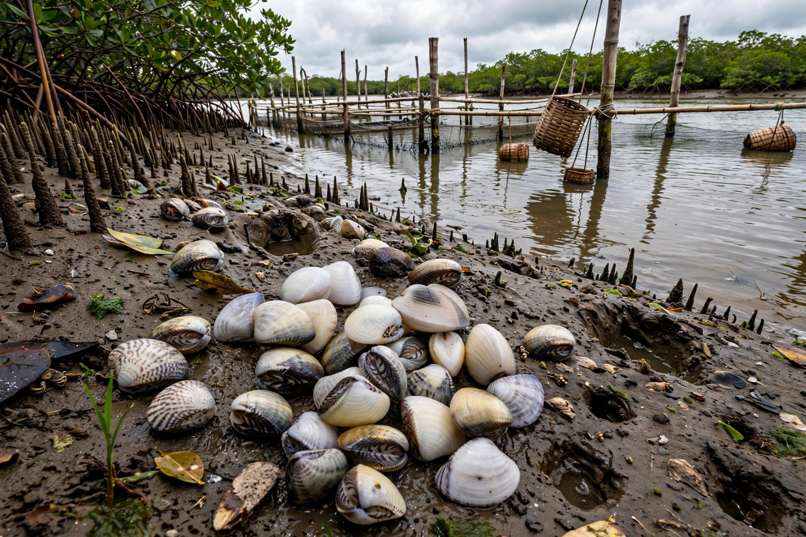

Piscicultura e Aquicultura
Planejamento e instalação de fazendas para a criação de peixes, camarões e moluscos. Projetos de viveiros, tanques-rede e fazendas marinhas. Muito forte no Ceará.

Pesca e Gestão Pesqueira
Gestão e monitoramento de frotas de pesca artesanal e industrial com foco na sustentabilidade, preservação dos estoques naturais, legislação e defeso.

Tecnologia do Pescado
Controle de qualidade, beneficiamento, conservação e industrialização do pescado até a distribuição comercial.

Meio Ambiente
Atuação em órgãos ambientais (como o Ibama), empresas privadas, institutos de pesquisa ou empreendedorismo próprio. Licenciamento ambiental, recuperação de áreas degradadas e educação ambiental.